"Está página foi criada para você e apenas para você, espero que todas as vezes que precisar se
sentir bem ou apenas lembrar quem você é, encontre aqui paz e amor, e também saiba o quanto é importante para mim."
👇Clica aqui antes de começar...👇
Luana, hoje você faz 18 anos, só quero te dizer que eu amo você, eu conheço você desde os 12 anos de idade e eu presenciei várias
fases e versões de você...
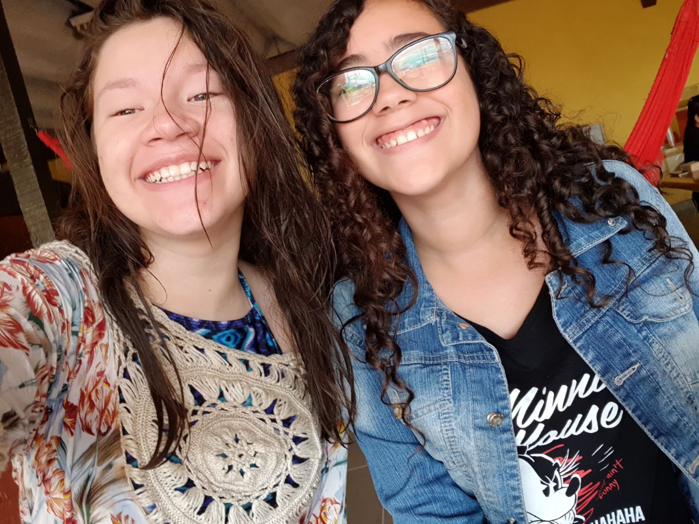
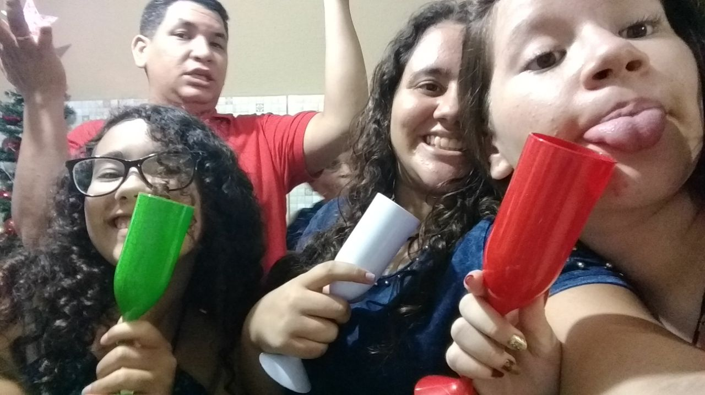
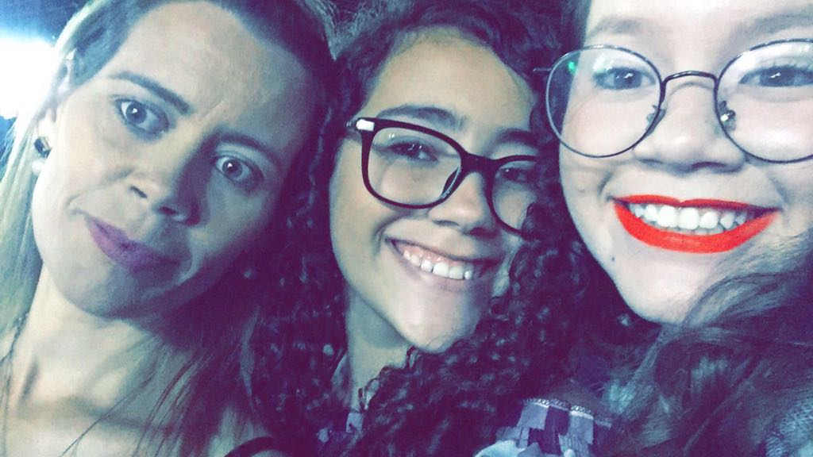
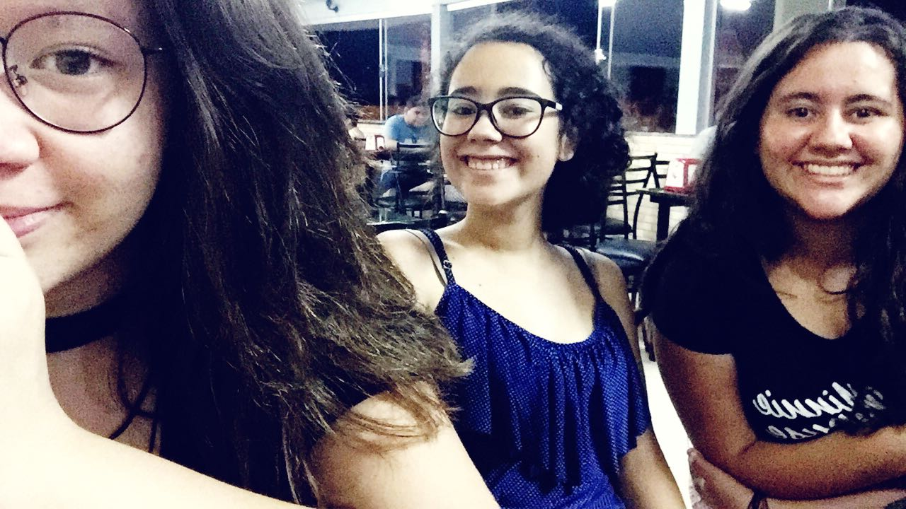
Confesso que sinto saudades de algumas versões, mas o que é a vida sem mudanças? Todos nós mudamos, amadureçemos e crescemos...
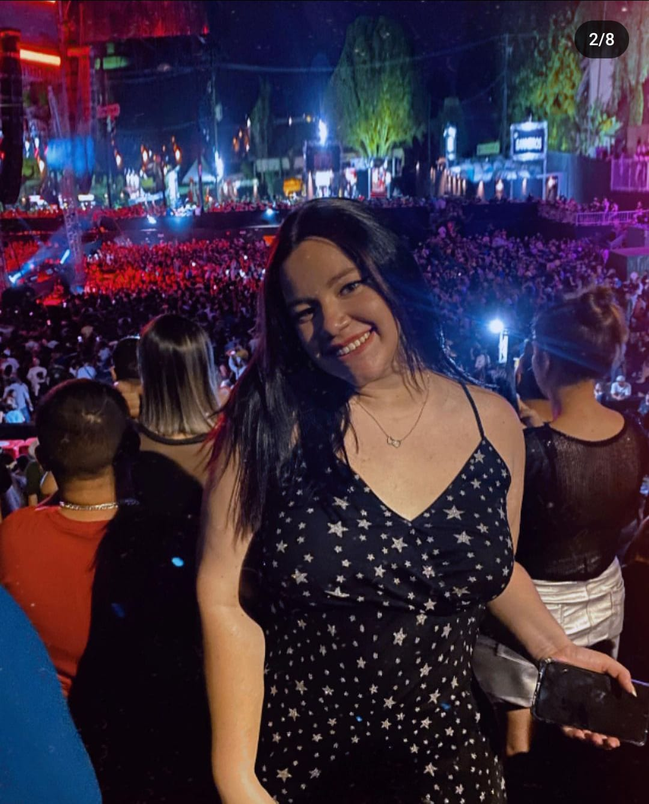
Se tornou essa mulher gata, não entendo como a literatura ainda não foi capaz de traduzir a sua beleza em palavras 😉.
"Eu sei que você teve que passar por muitas coisas até chegar aqui, sei da sua força e da sua luta,
você é uma guerreira meu bem, nunca desista dos seus sonhos..."
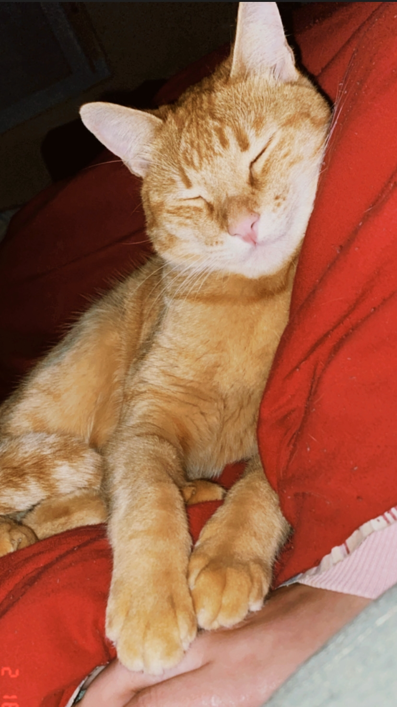
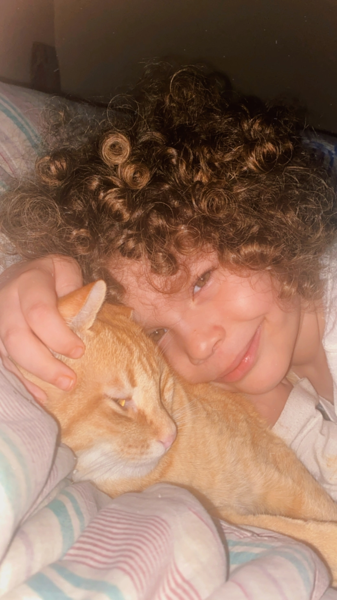
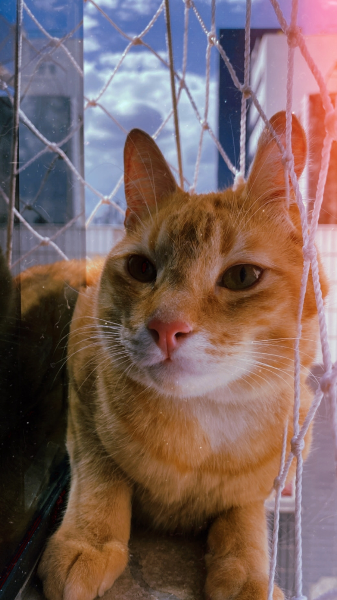
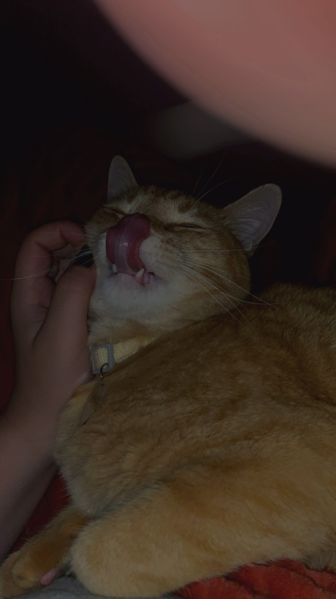
"Eu sei o quanto ele era e ainda é importante para você, sei o quanto machucou e que ainda sente falta, saiba que ele
sempre vai estar torçendo e olhando para você meu bem, pois saiba que ele tem muito orgulho de ti e de tudo que fez por ele..."
"Conquistou sua faculdade, passou de primeira ainda, parabéns meu bem, eu nunca duvidei, sei a pressão que você teve que passar para
chegar até aqui e esse mérito é todo seu, a melhor engenheira civil desse país"
"Você sempre vai pode contar com seus pais para cuidar e amar você, nem sempre é fácil, eu sei, mas eles sempre vão estar lá por você,
eles sempre vão te amar com todas às forças"
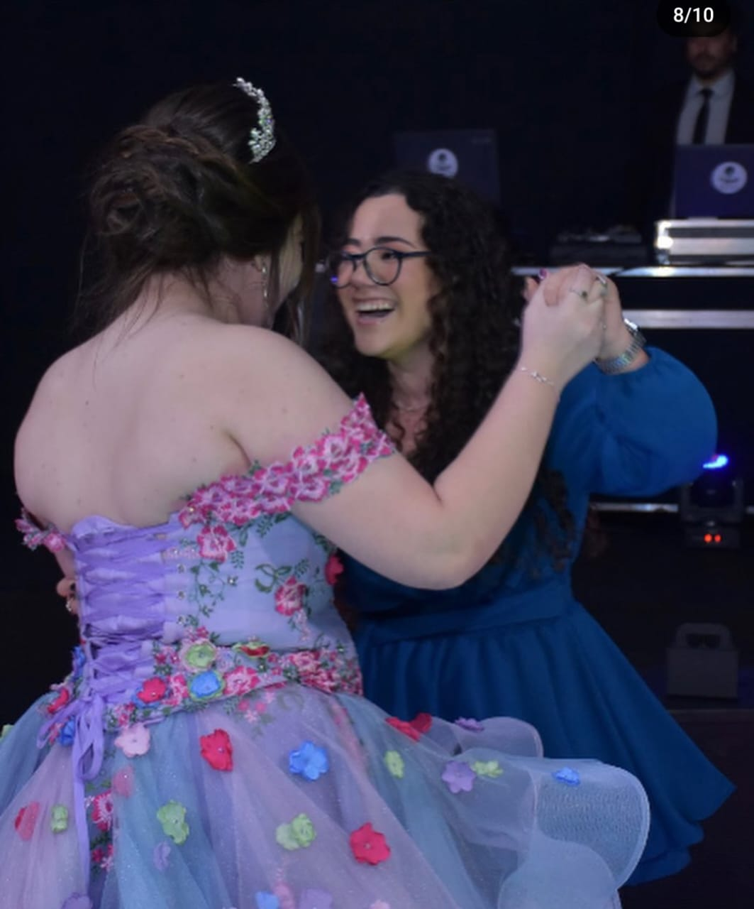
"Suas primas, na verdade todo mundo da família da sua tia vai estar sempre aqui para você, todos te amam demais, suas primas te amam demais,
nunca esqueça disso gatinha, por você elas vão até o fim do mundo, com toda às garras"
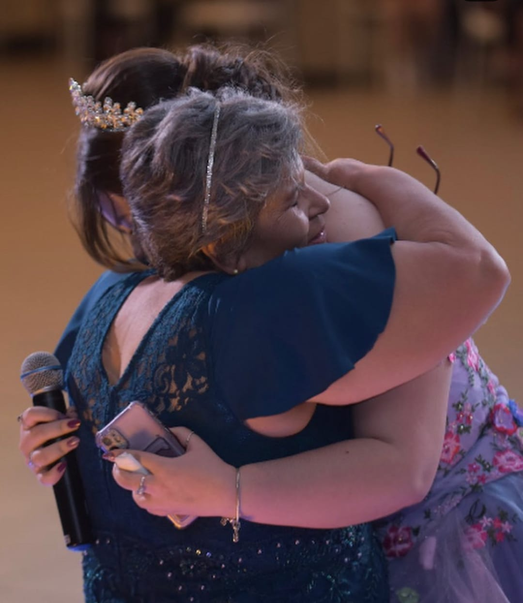
"Sua vô sem dúvidas é uma das pessoas mais incríveis desse planeta terra, essa mulher te ama demais, eu consigo ver isso, em tudo que ela já
se provou em tudo que eu já vi e que você me disse. E claro seu irmão, eu sei que ele sempre vai cuidar de você, já cuida na verdade,
esse ser que não existe outro igual e vai sempre estar perto quando precisar,
conto com ele para te afastar das coisas erradas, principalmente de todos os meninos ou meninas kkkkk.
"
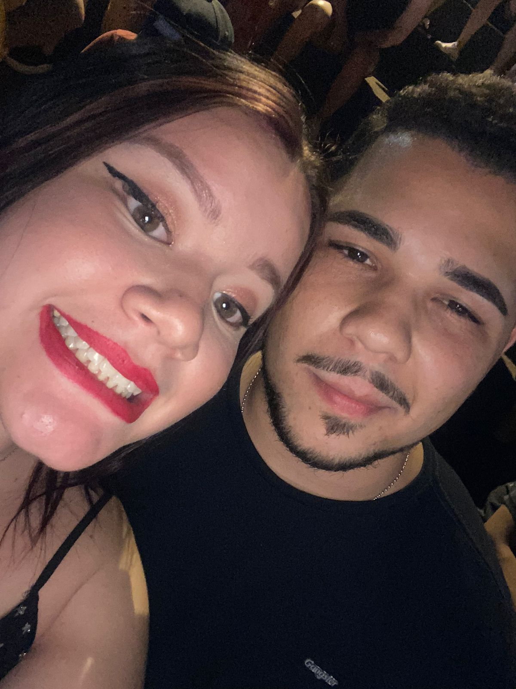
"E claro, eu, nem tudo foi como esperávamos, mas saiba que eu sempre vou estar aqui para você gatinha, esse é o meu jeito estranho de te desejar
parabéns, não sei se foi a melhor forma, você sabe que eu não sou normal, mas eu te desejo o melhor dessa vida, que você conquiste tudo que almeja,
que seja feliz, você merece toda felicidade desse mundo, que essa nova fase da sua vida seja repleta de alegrias e mudanças boas, mas não mude sua essência nunca,
eu gosto dela demais, que Deus abençõe sua vida, que aproveite cada momento, mas que não viva só de momentos, planeje, se cuida, se ame sempre, não esqueça que
é só linda por fora, mas por dentro também, você é boa de coração, sempre tenta dar o seu melhor, que possamos viver muitos momentos ainda, eu sempre vou estar aqui para você.
Eu te amo linda... Feliz aniversário, parabéns pelo seu dia."
.jpeg)